# install.packages("Matrix")
# install.packages("MASS")
library(gt) # to make table outputs presentation/publication ready.
library(broom) # clean output.
library(knitr) # to make tables.
library(gtsummary) # extension to gt
library(lattice) # It is a powerful data visualization for multivariate data
library(lme4) # Fit linear and generalized linear mixed-effects models
library(arm) # Data Analysis Using Regression and Multilevel models
library(tidyverse) # for cleaning wrangling data30 Mixed Effect Regression
Learning how to use Mixed Effect Models in R
30.1 Introduction
30.1.1 What is Mixed Effect Model?
Mixed Effects Regression is a method for analyzing data that are non-independent, multilevel/hierarchical, longitudinal, repeated or correlated. It allows both fixed and random effects, and are particularly used when there is non independence in the data, such as arises from a hierarchical structure. For example, students sampled from within schools, or patients from within hospitals.
30.1.2 Notes on the content
Throughout this lesson, we added references of some YouTube videos which we found helpful. Most of the content here is from those videos, courtesy of the Quant Psych channel. If you find the content of this discussion difficult, we highly recommend you to go watch those videos.
30.1.3 Terminology:
Other terms that are used for Mixed Effect Models include:
- Hierarchical Leaner Model (HLM)
- Multi-level model (MLM)
- Linear mixed-effect model (LMM)
- Mixed model
- Repeated measures linear regression
- Random effects model
- Varying coefficients model
Focus on what the model is trying to do instead of what the model is called.
30.1.4 An Example
First figure shows a positive correlation: the proportion of survival increases as the the severity of symptom increases.
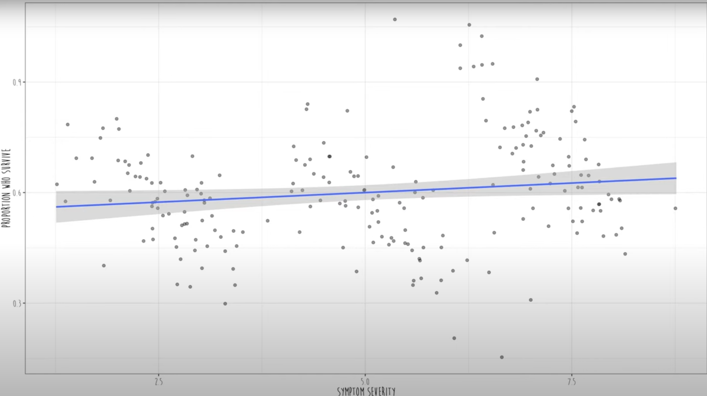
However, in real, if we color-code these data, we can see that three different clusters of hospitals data are shown.
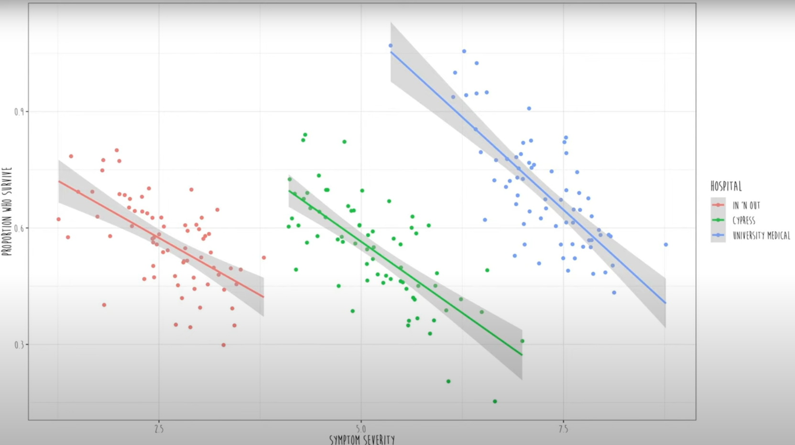
In mixed effect models, they fit a separate regression line for each and every cluster. Then it estimates an average slope between Y (Proportion of survival) and X (severity of symptoms) across all clusters (all hospitals).
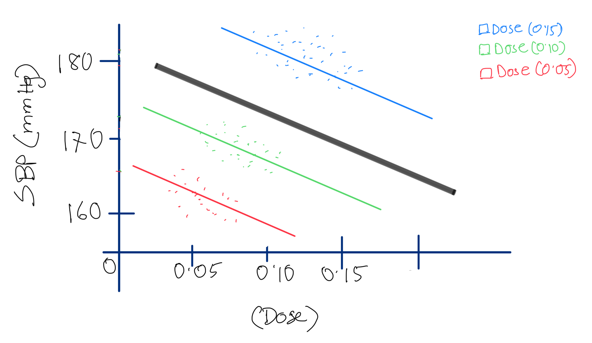
Here, the black line is the fixed effects and the colored lines are the random effects. So, all the participants across the three hospitals cannot be treated as independent data. Every cluster has its own regression line.
30.2 Mathematical Formulation of the Model
Fixed effects represent the systematic or population-level effects. These are parameters that apply to the entire population. In mathematical notation, we denote fixed effects as \(\beta\) and the fixed effects part of the model can be expressed as:
\[ Y = \textbf{X}\beta+e \] Where,
- \(Y\) is response variable
- \(\textbf{X}\) is a matrix of predictor variables
- \(e\) represents the random error.
Random effects account for variability due to specific groups or clusters within the data. These effects are specific to certain levels of a grouping variable (e.g., subjects, schools, or regions). In mathematical notation, we denote random effects as \(\textbf{Z}a\), where,
- \(\textbf{Z}\) is a fixed matrix
- \(a\) is an unobserved random effect vector
The full model incorporating both fixed and random effects is:
\[ Y = \textbf{X}\beta + \textbf{Z}a+ e. \] For example: to study the effect of different doses (predictor variable) of an anti-hypertensive drug on blood pressure (response variable) across multiple subjects, the model might look like this:
\[ Y_{ij} = \overbrace{\beta_0 + \beta_1Dose_{ij}}^{\text{fixed part}} + \underbrace{a_i + e_{ij}}_{\text{random part}} \]
Where,
- \(Y_{ij}\) is blood pressure for subject \(i\) at dose level \(j\)
- \(\beta_0\) is fixed effect parameter (intercept), represents baseline blood pressure when the dose was zero.
- \(\beta_1\) is another fixed effect parameter, represents effect of the dose levels on the blood pressure
- \(\text{Dose}_{ij}\) is dose level for subject \(i\) at level \(j\)
- \(a_i\) is random effect for subject \(i\), that captures subject-specific variability not explained by fixed effects. These random effects account for individual differences.
- \(e_{ij}\) is random error term, represents unexplained variability or noise in the model.
30.3 Regression Models used in analysis
Fixed effects model (when all model effects are fixed effects) Same intercept and same slope
Mixed effects model (when both fixed effect(s) and random effect(s) are present) Different intercepts same slope OR same intercept different slopes
Random effects model (when all model effects are random effects) Different intercepts different slopes
Depending on the data type and research question, we can use different types of models with random effects.
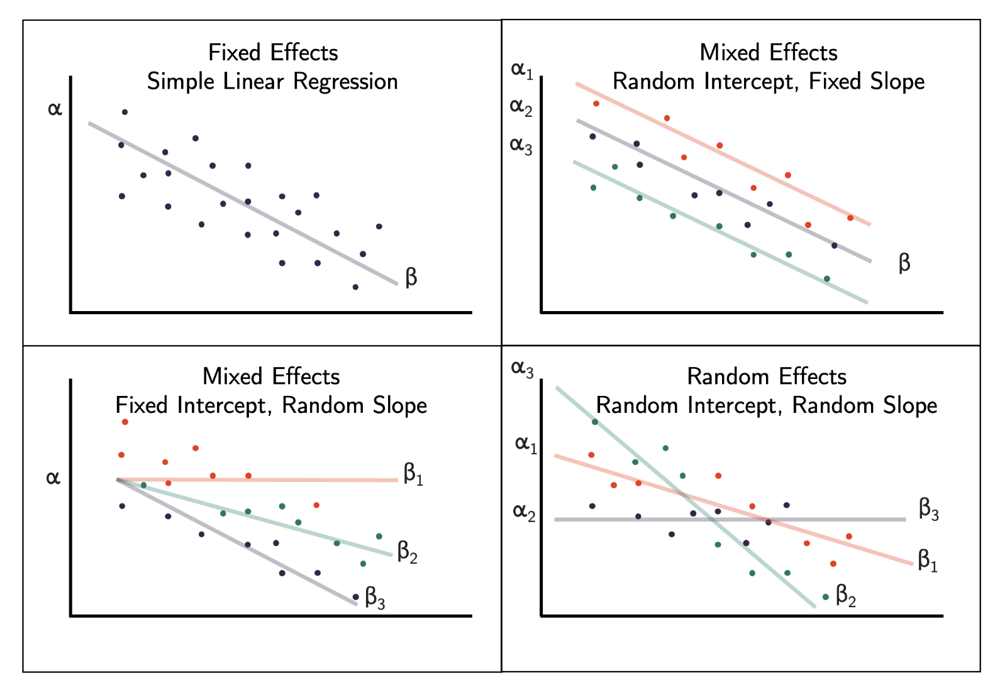
30.4 Choosing the Right Model
How should we decide which variable should be considered as fixed, mixed, or random? We have three strategies:
30.4.1 Strategy 1: Look into the data set
- Example: Math dataset: Math achievement data for different schools (clusters)
- Variables: School, Minority Status, Sex, Socio-Economic Status (SES), Math achievement and mean SES,
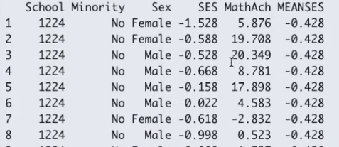
- Decision: If all the values in a variable (MEANSES) does not vary within a cluster variable (School), it cannot be fitted as random effect. This is because there is no slope as the MEANSES variable doesn’t vary within the SCHOOL cluster.).
30.4.2 Strategy 2: Use theoretical knowledge to guide you
Ask yourself or an expert to know more about the relation between two variables, if that relation changes within the cluster or not. For example, according to historic nutrition models, if we control the age, the relationship between calorie consumption and weight loss is exactly same for all individuals. However, in many cases using theory to decide if the slope will be fixed or random may not be possible.
30.4.3 Strategy 3: Model comparison
To explicitly test whether those effects should be fixed or random, we can compare the models with and without using the specific variable of interest as full model and reduced model. For example, in full model below, SES varies by school (random effect), but in reduced model SES did not vary by school (fixed effect).
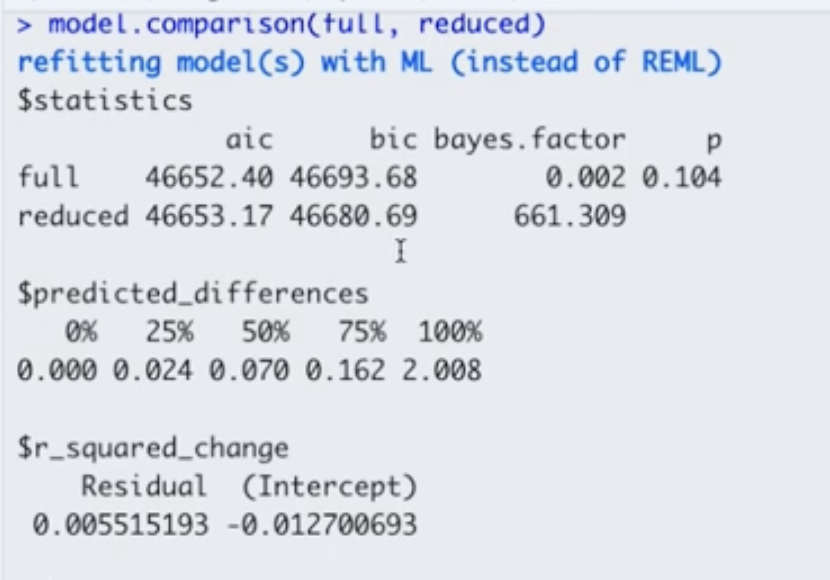 Here are some decision criteria based on this model comparison output:
- Decision 1: Because \(p > 0.05\), there is no statistically significant difference between the full and reduced models, so we can use the reduced model.
- Decision 2: Because the Bayes Factor \(> 10\) for reduced model, we can choose the reduced model.
- Decision 3: The AIC and BIC give mixed results. The reduced model has lower BIC but higher AIC when compared to the full model. However, considering the “decisions” we made based on the \(p\)-value and Bayes Factor, we still choose the reduced model.
30.5 How to do the analysis?
30.5.1 Packages for the following Lesson
30.5.2 Data Source and Description
Let’s do the analysis using the Planktonic larval duration (PLD) example! This example is from O’Connor et al (2007). As a brief intro on this study, temperature is important for the development of organisms. In marine species, temperature is very important and linked to growth. We want to see the association between time of survival (duration/PLD) and the temperature.
PLD <- read_table("../data/04_PLD.txt")Let’s check the structure of this data and how it briefly looks.
#strcuture
str(PLD)spc_tbl_ [214 × 5] (S3: spec_tbl_df/tbl_df/tbl/data.frame)
$ phylum : chr [1:214] "Annelida" "Annelida" "Annelida" "Annelida" ...
$ species: chr [1:214] "Circeus.spirillum" "Circeus.spirillum" "Circeus.spirillum" "Hydroides.elegans" ...
$ D.mode : chr [1:214] "L" "L" "L" "P" ...
$ temp : num [1:214] 5 10 15 15 20 25 30 5 10 17 ...
$ pld : num [1:214] 16 16 4 8 6.5 5 3.2 15 9.5 4.5 ...
- attr(*, "spec")=
.. cols(
.. phylum = col_character(),
.. species = col_character(),
.. D.mode = col_character(),
.. temp = col_double(),
.. pld = col_double()
.. )# just the top - seeing how it looks
head(PLD)# A tibble: 6 × 5
phylum species D.mode temp pld
<chr> <chr> <chr> <dbl> <dbl>
1 Annelida Circeus.spirillum L 5 16
2 Annelida Circeus.spirillum L 10 16
3 Annelida Circeus.spirillum L 15 4
4 Annelida Hydroides.elegans P 15 8
5 Annelida Hydroides.elegans P 20 6.5
6 Annelida Hydroides.elegans P 25 5 # brief summary
summary(PLD) phylum species D.mode temp
Length:214 Length:214 Length:214 Min. : 2.50
Class :character Class :character Class :character 1st Qu.:12.28
Mode :character Mode :character Mode :character Median :20.00
Mean :18.59
3rd Qu.:25.00
Max. :32.00
pld
Min. : 1.00
1st Qu.: 11.00
Median : 19.30
Mean : 26.28
3rd Qu.: 33.45
Max. :129.00 Let’s check how this would look if we plot the variable pld or planktonic larvae duration and the temperature. So we can see how the temperature is associated with their survival duration.
# how to plot in base R
plot(pld ~ temp, data = PLD,
xlab = "Temperature (C)",
ylab = "PLD survival (Days)",
pch = 16)
# add lm line in base R
abline(lm(pld ~ temp, data = PLD))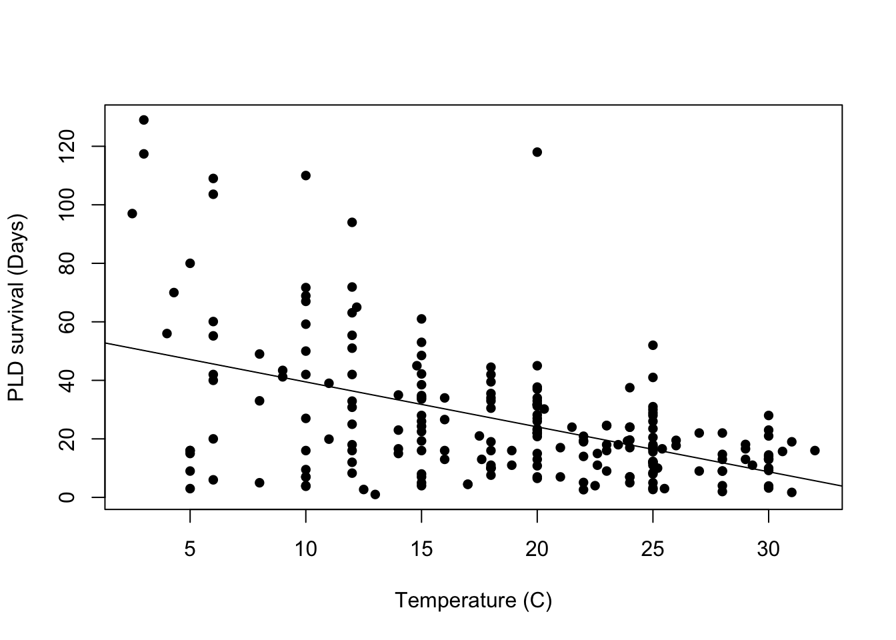
30.5.3 Fit first model: Linear model
Let’s first fit a linear model and check any assumptions. Why are we fitting a linear model first? It might be important to check the standard error of this model and compare to the next model, that might be a better fit later on.
# fitting linear model first
LinearModel_1 <- lm(pld ~ temp, data = PLD)
summary(LinearModel_1)
Call:
lm(formula = pld ~ temp, data = PLD)
Residuals:
Min 1Q Median 3Q Max
-44.158 -11.351 -0.430 7.684 93.884
Coefficients:
Estimate Std. Error t value Pr(>|t|)
(Intercept) 54.8390 3.7954 14.449 < 2e-16 ***
temp -1.5361 0.1899 -8.087 4.65e-14 ***
---
Signif. codes: 0 '***' 0.001 '**' 0.01 '*' 0.05 '.' 0.1 ' ' 1
Residual standard error: 20.36 on 212 degrees of freedom
Multiple R-squared: 0.2358, Adjusted R-squared: 0.2322
F-statistic: 65.4 on 1 and 212 DF, p-value: 4.652e-14We can fit this output in a gtsummary to make it nicer looking:
LinearModel_1 |>
tbl_regression()| Characteristic | Beta | 95% CI1 | p-value |
|---|---|---|---|
| temp | -1.5 | -1.9, -1.2 | <0.001 |
| 1 CI = Confidence Interval | |||
We are interested in checking out visually, the equal variance (homoscedasticity) of residuals. So, we plot a base residual graph:
# better to do a scatter plot
LinearModel_res <- resid(LinearModel_1)
# plot residual
plot(PLD$temp, LinearModel_res,
ylab = "Residuals",
xlab = "Temperature (C)",
main = "Residual graph"
)
abline(0,0)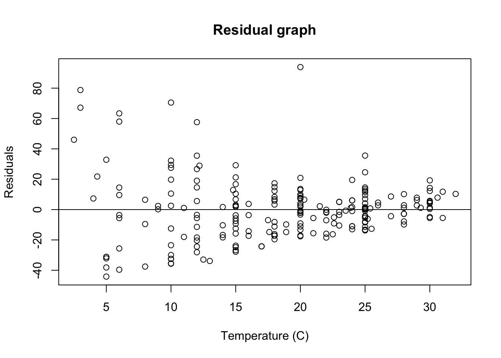
Just upon visual observation, it seems like this assumption may be violated, so we think it might be important to do some transformations.
30.5.4 Log transformation
LinearMode_2Log <- lm(log(pld) ~ temp, data = PLD)
summary(LinearMode_2Log)
Call:
lm(formula = log(pld) ~ temp, data = PLD)
Residuals:
Min 1Q Median 3Q Max
-3.1670 -0.4327 0.1948 0.5704 1.9141
Coefficients:
Estimate Std. Error t value Pr(>|t|)
(Intercept) 3.743473 0.153517 24.385 < 2e-16 ***
temp -0.044345 0.007683 -5.772 2.76e-08 ***
---
Signif. codes: 0 '***' 0.001 '**' 0.01 '*' 0.05 '.' 0.1 ' ' 1
Residual standard error: 0.8236 on 212 degrees of freedom
Multiple R-squared: 0.1358, Adjusted R-squared: 0.1317
F-statistic: 33.31 on 1 and 212 DF, p-value: 2.759e-0830.5.5 Residual of new log transformed graph
# better to do a scatter plot
LinearModel2_res <- resid(LinearMode_2Log)
# plot residual
plot(PLD$temp, LinearModel2_res,
ylab = "residuals",
xlab = "temp",
main = "Residual graph (log transformation)"
)
abline(0,0)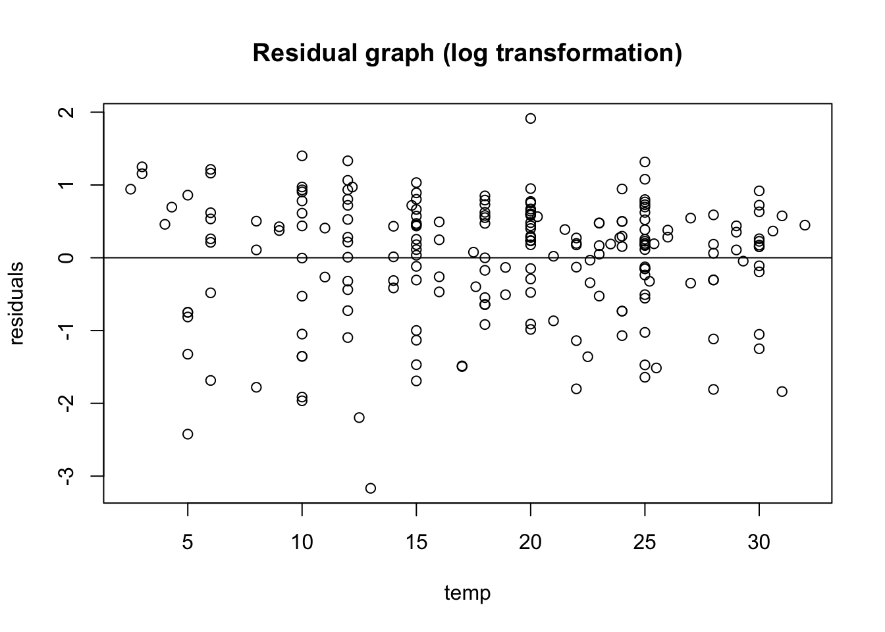
A bit better! Now we want to see the original plot we plotted with PLD and temperature:
plot(log(pld) ~ temp, data = PLD,
xlab = "Temperature in C",
ylab = "PLD in days")
abline(LinearMode_2Log)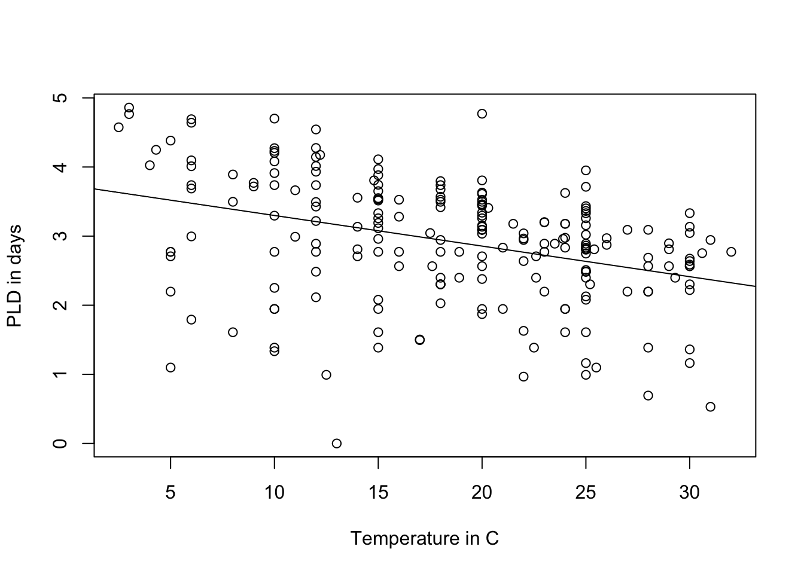
30.5.6 Check distribution by phylum
In ggplot you can use the facet_wrap() function to separate by phylum:
ggplot(data = PLD) +
aes(x = temp, y = log(pld)) +
geom_point() +
labs(x = "temperature, C",
y = "Log(PLD)") +
stat_smooth(method = "lm", formula = "y ~ x", se = FALSE, fullrange = TRUE) +
theme_classic() +
facet_wrap(~ phylum)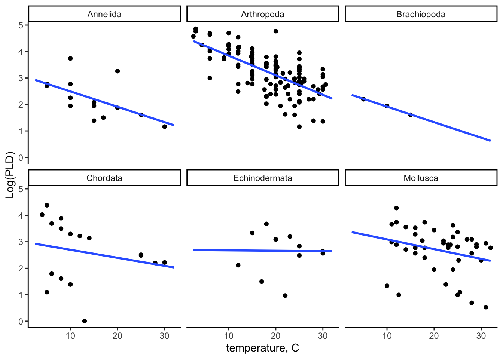
30.5.7 Fitting the mixed model
We can use the library lme4 to fit a log-transformed linear regression model with random intercepts and fixed slope
# creating log -transformed variables
PLD$log_pld <- log(PLD$pld)
# mixed model with random intercepts and fixed slope
MixEfcModel <- lmer(log_pld ~ temp + (1 | phylum), data = PLD)
summary(MixEfcModel)Linear mixed model fit by REML ['lmerMod']
Formula: log_pld ~ temp + (1 | phylum)
Data: PLD
REML criterion at convergence: 493.1
Scaled residuals:
Min 1Q Median 3Q Max
-3.6049 -0.5235 0.1978 0.6963 2.2825
Random effects:
Groups Name Variance Std.Dev.
phylum (Intercept) 0.3128 0.5593
Residual 0.5278 0.7265
Number of obs: 214, groups: phylum, 6
Fixed effects:
Estimate Std. Error t value
(Intercept) 3.544039 0.271814 13.038
temp -0.056631 0.007217 -7.846
Correlation of Fixed Effects:
(Intr)
temp -0.446Interpretation: For one unit increase in the degrees of temperature, there is a 0.057 unit decrease in Planktonic larval duration. (or, as the temperature increase, the plankton duration is lower.) We now check the coefficients for random intercepts and fixed slope of phylum cluster:
coef(MixEfcModel)$phylum (Intercept) temp
Annelida 3.102042 -0.05663111
Arthropoda 4.244984 -0.05663111
Brachiopoda 2.865529 -0.05663111
Chordata 3.355257 -0.05663111
Echinodermata 3.829580 -0.05663111
Mollusca 3.866841 -0.0566311130.5.8 Add Mixed Effect Predictions
We first need to create a new data frame with these random intercepts and fixed slope. We create a new data frame modelCoef_df:
modelCoef_df <-
coef(MixEfcModel)$phylum %>%
# to convert row names between an explicit column
rownames_to_column(var = "phylum") %>%
rename(intercept = `(Intercept)`, slope = temp)
modelCoef_df phylum intercept slope
1 Annelida 3.102042 -0.05663111
2 Arthropoda 4.244984 -0.05663111
3 Brachiopoda 2.865529 -0.05663111
4 Chordata 3.355257 -0.05663111
5 Echinodermata 3.829580 -0.05663111
6 Mollusca 3.866841 -0.05663111Now we create a prediction model data frame by adding the modelCoef_df with the prediction model to calculate the predicted values:
pld_predicted_df <-
PLD %>%
left_join(y = modelCoef_df, by = "phylum") %>%
mutate(
log_pld_pred = intercept + temp * slope
)30.5.9 Plotting the prediction models
ggplot(data = pld_predicted_df) +
theme_classic() +
aes(x = temp) +
labs(
x = "temperature, C",
y = "Log(PLD)"
) +
geom_point(aes(y = log_pld)) +
geom_line(aes(y = log_pld_pred), color = "blue", size = 1) +
facet_wrap(~ phylum)Warning: Using `size` aesthetic for lines was deprecated in ggplot2 3.4.0.
ℹ Please use `linewidth` instead.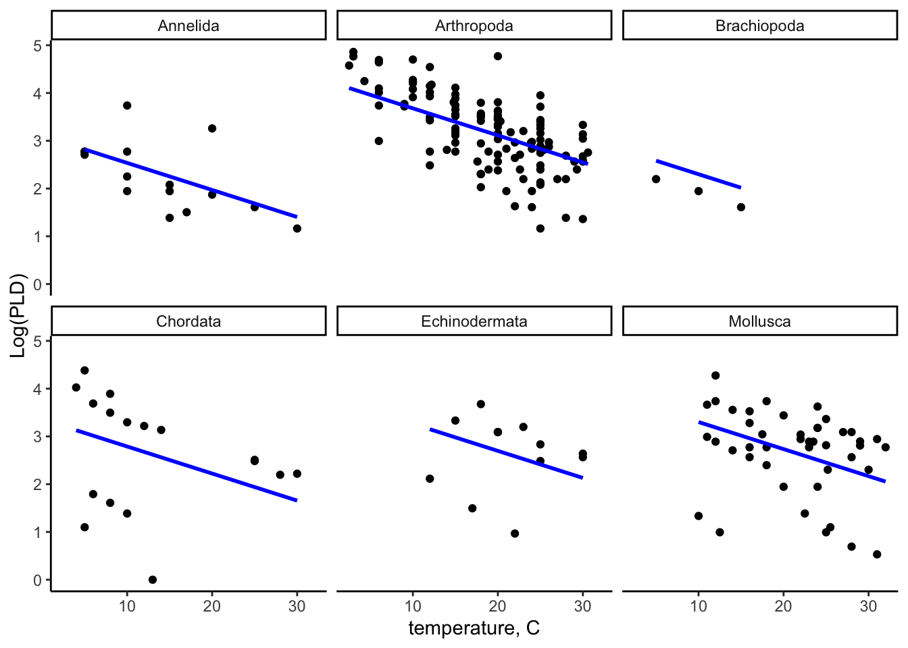
30.6 Interpretation
We can see in the predicted model, all slopes for within all phylum clusters are in the same line, showing it has fixed effect and random intercepts. You can compare it with the linear model figure and can see the differences of the slopes.
30.7 Conclusion
In this lecture you learned about the definition and types of mixed effect model, when it is appropriate to use a random, fixed or mixed effect model, the difference between an ordinary single-level model, and a mixed effect model, the assumptions of the random intercept model, hypothesis testing for the variation, testing coefficient, fitting prediction model and finally, how to interpret results from the fixed part and the random part of a random intercept model.
30.8 References
Harrison XA, Donaldson L, Correa-Cano ME, Evans J, Fisher DN, Goodwin CED, Robinson BS, Hodgson DJ, Inger R. A brief introduction to mixed effects modelling and multi-model inference in ecology. PeerJ. 2018 May 23;6:e4794. doi: 10.7717/peerj.4794. PMID: 29844961; PMCID: PMC5970551.
https://m-clark.github.io/mixed-models-with-R/random_intercepts.html
https://medium.com/(marc.jacobs012/introduction-to-mixed-models-in-r-9c017fd83a63?)
https://www.youtube.com/watch?v=c_tYZxQLoDA&list=PL8F480DgtpW9_IT7xN1XeRF_dglZmK0nM
https://www.youtube.com/watch?v=eVuQlGDZxHs&list=PL8F480DgtpW9_IT7xN1XeRF_dglZmK0nM&index=2
supplementary material for Tom Snijders and Roel Bosker textbook - Shjders, T Bosker R, 1999. Multilevel analysis: an introduction to basic and advanced mltilevel modeling, London, Sage, including updates and corrections data set examples http://stat.gamma.rug.nl/multilevel.htm
University of Bristol, Random Intercept model, (2018). http://www.bristol.ac.uk/cmm/learning/videos/random-intercepts.html
Midway, S. (2019). “Data Analysis in R.” https://bookdown.org/steve_midway/DAR/random-effects.html